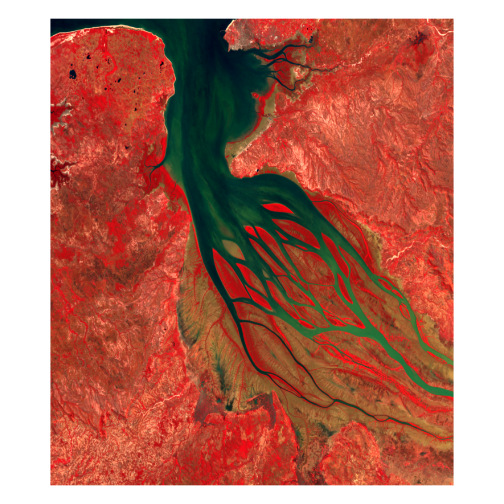
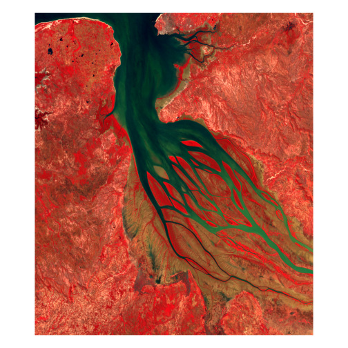

Digital Earth Africa GeoMAD
Source:vignettes/Digital-Earth-Africa-GeoMAD.Rmd
Digital-Earth-Africa-GeoMAD.RmdSometimes, amazing people do all the work for you! Digital Earth Africa has a lot of amazing data available but the datasets that are (in my opinion) particularly special and, in large part, motivated the creation of vrtility (so that we can get some of the Open Data Cube functionality in R) are the GeoMAD datasets. These are (sub)annual geometric median composites of Landsat and Sentinel-2 archives for Africa. You can access these data in all manner of ways, but here is how you can do it with vrtility.
Some nice advantages of using vrtility here is - parallel asynchronous downloads and convenient organisation of the multiple bands into a single raster file.
This is also a classic use case for the VRT format, combining multiple tiles into a single file 😀.
Getting started
So let’s get into it. First load vrtility and then set the number of mirai daemons you want to use (R processes that will download the data in parallel).
Locating the data
To locate the data, we need to define a bounding box. First we need this bbox in lat-long coordinates for querying the STAC API, but we can project these bounds later. For convenience, we’ll use this handy function to create a bounding box from a WKT point and extend it by a certain amount in the x and y directions. This location is in North of Madagascar.
bbox <- gdalraster::bbox_from_wkt(
wkt = "POINT (46.33 -15.9)",
extend_x = 0.22,
extend_y = 0.2
)Querying the data
We can now query the STAC API for the Landsat 8 and 9 annual
composites for 2024. The stac_query() function will return
a doc_items object which we can use to build our VRT
objects. This can be optionally filtered, as shown below, if you don’t
need all of the assets (bands).
l8l9_query <- stac_query(
bbox = bbox,
stac_source = "https://explorer.digitalearth.africa/stac/",
collection = "gm_ls8_ls9_annual",
start_date = "2024-01-01",
end_date = "2024-12-31"
)
# This step is optional - do this if you only want a subset of the assets (bands)
l8l9_query <- rstac::assets_select(
l8l9_query,
asset_names = c("SR_B2", "SR_B3", "SR_B4", "SR_B5")
)
print(l8l9_query)
#> ###Items
#> - features (2 item(s)):
#> - 6d21f993-74bc-52d3-bafa-96164e7bce86
#> - cb7d0c9d-bc36-538b-a67d-930999cbf3c9
#> - assets: SR_B2, SR_B3, SR_B4, SR_B5
#> - item's fields:
#> assets, bbox, collection, geometry, id, links, properties, stac_extensions, stac_version, typeCollecting the data
So now we can use the core vrtiltiy functions to collect, reproject
and align (warp) the data before using vrt_compute() to
create a single raster file from the VRT. Note that we set set some
important environment variables in vrt_collect that will
allow you to access the Digital Earth Africa data from the S3
bucket.
l8l9_vrt <- vrt_collect(
l8l9_query,
gdal_config_opts(
AWS_NO_SIGN_REQUEST = "YES",
AWS_S3_ENDPOINT = "s3.af-south-1.amazonaws.com"
)
)
print(l8l9_vrt)
#> → <VRT Collection>
#>
#> VRT SRS:
#> PROJCS["WGS 84 / NSIDC EASE-Grid 2.0 Global",GEOGCS["WGS 84",DATUM["WGS_1984",SPHEROID["WGS 84",6378137,298.257223563,AUTHORITY["EPSG","7030"]],AUTHORITY["EPSG","6326"]],PRIMEM["Greenwich",0,AUTHORITY["EPSG","8901"]],UNIT["degree",0.0174532925199433,AUTHORITY["EPSG","9122"]],AUTHORITY["EPSG","4326"]],PROJECTION["Cylindrical_Equal_Area"],PARAMETER["standard_parallel_1",30],PARAMETER["central_meridian",0],PARAMETER["false_easting",0],PARAMETER["false_northing",0],UNIT["metre",1,AUTHORITY["EPSG","9001"]],AXIS["Easting",EAST],AXIS["Northing",NORTH],AUTHORITY["EPSG","6933"]]
#> Bounding Box: 4416000 -2112000 4512000 -1920000
#> Pixel res: 30, 30
#> Start Date: 2024-01-01 UTC
#> End Date: 2024-01-01 UTC
#> Number of Items: 2
#> Assets: SR_B2, SR_B3, SR_B4, SR_B5
# if you just want to look at one of the tiles...
# plot(l8l9_vrt[[1]][[2]], c(3, 2, 1))
bbox_proj <- bbox_to_projected(bbox, l8l9_vrt$srs)
l8l9_vrt_warped <- vrt_warp(
l8l9_vrt,
t_srs = attr(bbox_proj, "wkt"),
te = bbox_proj,
tr = c(30, 30)
) |>
vrt_stack()
l8l9file <- vrt_compute(
l8l9_vrt_warped,
outfile = fs::file_temp(ext = "tif"),
engine = "gdalraster"
)Plotting the data
Let’s have a look at the data in both true colour and false colour.
withr::with_par(list(mar = c(0, 0, 0, 0)), {
plot_raster_src(
l8l9file,
bands = c(3, 2, 1),
axes = FALSE
)
plot_raster_src(
l8l9file,
bands = c(4, 3, 2),
axes = FALSE
)
}) 
